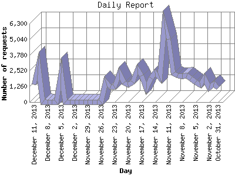

The Daily Report identifies the activity for each day within the reporting period. Remember that one page hit can result in several server requests as the images for each page are loaded.

| Day | Number of requests | Number of page requests | |
|---|---|---|---|
| 1. | October 31, 2013 | 1,122 | 61 |
| 2. | November 1, 2013 | 1,469 | 127 |
| 3. | November 2, 2013 | 1,129 | 72 |
| 4. | November 3, 2013 | 1,944 | 257 |
| 5. | November 4, 2013 | 1,348 | 180 |
| 6. | November 5, 2013 | 1,617 | 124 |
| 7. | November 6, 2013 | 1,880 | 132 |
| 8. | November 7, 2013 | 2,129 | 159 |
| 9. | November 8, 2013 | 2,061 | 129 |
| 10. | November 9, 2013 | 2,121 | 78 |
| 11. | November 10, 2013 | 2,327 | 114 |
| 12. | November 11, 2013 | 5,031 | 243 |
| 13. | November 12, 2013 | 6,256 | 306 |
| 14. | November 13, 2013 | 1,936 | 166 |
| 15. | November 14, 2013 | 2,337 | 172 |
| 16. | November 15, 2013 | 1,951 | 207 |
| 17. | November 16, 2013 | 1,085 | 42 |
| 18. | November 17, 2013 | 2,132 | 287 |
| 19. | November 18, 2013 | 2,625 | 233 |
| 20. | November 19, 2013 | 1,601 | 180 |
| 21. | November 20, 2013 | 1,342 | 75 |
| 22. | November 21, 2013 | 1,542 | 169 |
| 23. | November 22, 2013 | 2,319 | 257 |
| 24. | November 23, 2013 | 1,238 | 115 |
| 25. | November 24, 2013 | 1,215 | 108 |
| 26. | November 25, 2013 | 1,636 | 139 |
| 27. | November 26, 2013 | 1 | 0 |
| 28. | November 27, 2013 | 0 | 0 |
| 29. | November 28, 2013 | 0 | 0 |
| 30. | November 29, 2013 | 0 | 0 |
| 31. | November 30, 2013 | 0 | 0 |
| 32. | December 1, 2013 | 0 | 0 |
| 33. | December 2, 2013 | 0 | 0 |
| 34. | December 3, 2013 | 0 | 0 |
| 35. | December 4, 2013 | 0 | 0 |
| 36. | December 5, 2013 | 2,321 | 260 |
| 37. | December 6, 2013 | 0 | 0 |
| 38. | December 7, 2013 | 0 | 0 |
| 39. | December 8, 2013 | 0 | 0 |
| 40. | December 9, 2013 | 0 | 0 |
| 41. | December 10, 2013 | 2,893 | 377 |
| 42. | December 11, 2013 | 1,390 | 188 |
Most active day October 15, 2013 : 393 pages sent. 6,256 requests handled.
Daily average: 165 pages sent. 1,999 requests handled.
This report was generated on December 12, 2013 06:54.
Report time frame September 21, 2013 00:02 to December 11, 2013 23:56.
| Web statistics report produced by: analog 6.0 / Report Magic 2.21 |